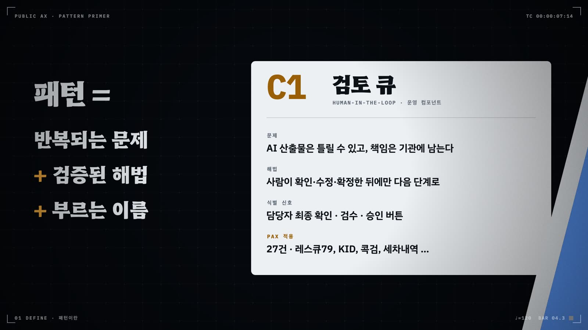
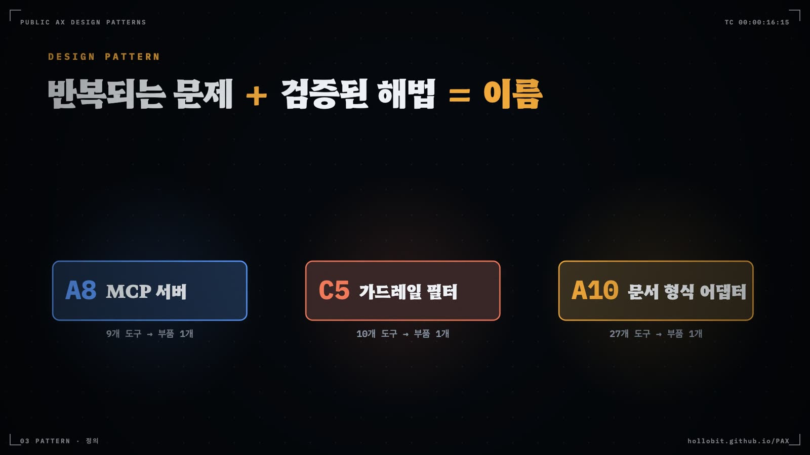

디자인 패턴의 원리
패턴은 반복되는 문제를 푼 검증된 해법의 구조에 이름을 붙인 것이다. 1977년 건축에서 시작한 이 발상은 객체지향 설계와 기업 통합, 클라우드, 기계학습과 에이전트를 거쳐 공공 AX까지 왔다. 이름이 생기면 기관끼리 같은 말로 설계를 견주고, 남이 이미 치른 실패를 피해 간다. 그 대신 목록에 오르려면 이름과 문제와 해법과 결과를 갖추고 세 곳 이상에서 독립적으로 쓰였다는 확인을 받아야 한다. 기술 이름만으로는 그 문턱을 넘지 못한다. 카탈로그는 그 형식과 기준을 앞선 문헌에서 빌려 왔고, 모든 부품을 같은 형식으로 적고 같은 기준으로 들이고 내보낸다.
- 패턴의 정의를 말하고, 모범 사례·가이드라인·표준·참조 아키텍처·안티패턴·패턴 언어와 패턴을 구별한다
- 1977년 알렉산더에서 이 카탈로그까지 패턴의 역사와 분야별 주요 패턴 카탈로그를 안다
- 패턴이 주는 이점과 치르는 비용을 공공 AX의 예로 설명한다
- 기획·발주·설계 검토·심사·운영 점검 자리에서 다섯 단계 절차로 패턴을 찾고 조립한다
- 고전 설계 패턴에서 보안 패턴까지 카탈로그가 빌려 온 문헌의 계보와 각 문헌의 기여를 설명한다
- 패턴 항목 스키마의 각 필드가 어디서 왔고 무엇을 적는지 구분한다
- 최소 요건, Rule of Three, 변형, 퇴출 규칙으로 새 항목의 등재 여부를 판정한다
- 계층·관심사·생애주기·제어 흐름·이해관계자 다섯 뷰로 같은 부품을 찾는다
- Erl과 Gulli의 형식이 이 책의 패턴 프로필 어디에 대응하는지 안다
가람시 정보통신과 AX팀의 메일함에 부서 요청이 세 통 와 있었다. 기획예산과는 "RAG 패턴을 도입하고 싶다"고 했고, 민원여권과는 "에이전트 패턴으로 상담을 자동화하자"고 했다. 복지정책과는 "MCP 패턴 적용 가능 여부"를 물었다. AX팀장은 세 통을 나란히 띄워 놓고 한참을 보다가 팀원들에게 물었다. 이 세 부서가 각각 풀려는 문제가 뭡니까?
아무도 바로 답하지 못했다. 세 요청 모두 기술 이름만 있고 문제는 없었다. 카탈로그는 바로 이런 요청을 패턴으로 받지 않는다. 등재 규칙의 첫 문장이 "기술명(RAG·MCP·에이전트)만으로는 등재하지 않는다"이다. AX팀장이 요청서 세 통을 돌려보내며 붙인 메모도 같은 말이었다. 기술 이름 말고, 줄이고 싶은 일을 적어 주십시오.
3.1 패턴이란 무엇인가
패턴이라는 말에 설계 언어의 뜻을 처음 실은 사람은 건축가 크리스토퍼 알렉산더였다. 그는 마을과 건물을 짓는 데 반복되는 문제와 해법을 이름 붙인 항목으로 묶어 하나의 패턴 언어로 엮었다. 소프트웨어 설계는 이 생각을 빌려 왔다. Gamma 등 네 명의 저자, 흔히 GoF(Gang of Four)라 부르는 이들은 객체지향 설계에서 반복되는 해법들을 같은 형식으로 정리했다. 카탈로그는 이들의 정의에서 출발한다. 패턴은 반복되는 문제의 검증된 해법이다. 최소한 이름·문제·해법·결과 네 요소를 갖추고, 특정 기술에 묶이지 않는 형태로 문서화되어야 한다.

정의는 그 뒤로 여러 방향으로 넓어졌다. 1장에서 본 대로 고전 디자인 패턴 해설(refactoring.guru)은 패턴의 가치를 팀의 공통 언어에 두었고, 서비스 디자이너 Levine은 패턴을 서비스를 이루는 빌딩블록이라 불렀으며, 마이크로서비스 패턴 24종은 그 빌딩블록을 배포 가능한 인프라 부품으로 만들었다.
카탈로그는 세 정의를 1장의 한 문장으로 합쳤다. 패턴은 여러 기관이 공통으로 쓰는 부품이고, 과제는 그 부품의 배선도다. 이 문장에서 무게가 실린 단어는 공통이다. 한 기관 한 부서만 쓰는 해법은 아무리 잘 만들어도 패턴이 되지 않는다. 여러 곳에서 같은 문제를 같은 모양으로 풀고 있다는 것이 확인되어야 이름을 붙일 자격이 생긴다.
공공 부문에서는 공통이라는 조건이 더 날카롭게 걸린다. 1장의 Provider 패턴으로 말하면, 기관마다 부서마다 모델 연결과 로그와 폴백을 따로 만드는 상황은 prop drilling의 공공판이다. 범정부 AI 공통기반이나 공공 깃랩 같은 실물 Provider가 있는데도 기관과 부서가 저마다 다시 만든다. 이 함정에는 X3부서마다 챗봇이라는 이름이 붙어 있다.
한 문장 정의와 그 안의 낱말
이 책이 쓰는 정의를 한 문장으로 적으면 이렇다. 디자인 패턴은 반복해서 나타나는 문제에 대해, 특정 맥락에서 이미 검증된 해법의 구조에 이름을 붙여 다른 사람도 가져다 쓰게 만든 것이다. 문장은 짧아도 낱말마다 걸러 내는 일이 있다.
반복이라는 낱말은 한 번뿐인 문제를 뺀다. 올해 한 부서에만 생긴 사정은 그 부서가 풀면 되고, 이름까지 붙일 까닭이 없다. 맥락은 해법이 통하는 조건을 붙잡아 둔다. 인터넷망에서 잘 돌던 구조가 폐쇄망에서는 쓸모가 없을 때가 많다. 검증은 해법이 실제로 돌아간 적이 있어야 한다는 요구다. 회의실 칠판에서 나온 좋은 생각은 아직 패턴이 아니다. 구조라는 낱말은 무엇을 옮겨 가는지를 정한다. 옮겨 가는 것은 문제를 나누는 방식과 역할을 나누는 방식이다. 마지막 낱말인 이름은 이 모든 것을 남에게 건네는 손잡이가 된다.
그래서 패턴은 설계의 뼈대에 가깝다. 두 기관의 민원 상담 서비스가 하나는 해외 상용 모델을, 하나는 국산 모델을 쓰더라도 둘 다 기관 규정에서 근거를 찾아 답하고 답마다 출처를 붙이며 근거가 없으면 담당자에게 넘긴다면, 두 서비스는 같은 패턴인 B3지식 접지 상담을 쓴다. 거꾸로 같은 모델을 불러도 사람이 초안을 고쳐 확정하면 B1코파일럿이고, 모델이 도구를 이어 부르며 여러 단계를 처리하면 B6에이전트 오케스트레이터가 된다. 같은 이름이 붙은 두 사례는 세부 기술이 달라도 문제를 쪼갠 방식과 역할 분담이 같다.
패턴이 아닌 것
정의를 거꾸로 읽으면 패턴에서 빠지는 것들이 보인다. 첫째는 특정 제품이나 특정 회사 서비스의 사용법이다. 어느 모델의 프롬프트 요령은 그 모델이 바뀌면 함께 낡는다. 패턴은 기술이 바뀌어도 남는 구조를 적는다. 둘째는 복사해 붙이는 코드 조각이다. 코드는 패턴을 구현한 결과물 가운데 하나일 뿐이고, 같은 패턴을 언어와 도구가 다른 코드 열 벌로도 구현한다. 셋째는 잘 만든 화면 하나다. 한 과제의 화면 캡처는 그 과제의 결과이고, 다른 과제로 옮길 구조를 보여 주지 않는다. 화면에서 출처를 어디에 어떻게 붙였는지를 떼어 내 이름을 붙여야 비로소 F1출처 표시 같은 패턴이 된다. 기술 이름을 패턴으로 착각하는 일은 1장의 흔한 오해(1.6절)에서 이미 다뤘다.
이웃 개념과의 차이
공공기관 문서에는 패턴과 비슷해 보이는 말이 여럿 나온다. 모범 사례, 가이드라인, 표준, 프레임워크, 참조 아키텍처가 그렇다. 이 말들은 서로 겹치지만 적는 대상과 쓰는 방식이 다르다. 표 3.1에 차이를 모았다.
| 개념 | 무엇을 적나 | 패턴과 다른 점 | 이 책에서 만나는 곳 |
|---|---|---|---|
| 모범 사례 | 한 기관이 잘한 일 한 건과 그 성과 | 한 번의 성공담이다. 같은 모양이 세 곳 이상에서 확인되기 전에는 패턴의 사용례 한 건에 그친다 | PAX 사례, 부록 F 케이스북 |
| 가이드라인·지침 | 해야 할 일과 하지 말아야 할 일, 점검 항목 | 무엇을 지켜야 하는지는 말하지만 어떤 구조로 지키는지는 비워 두는 경우가 많다. 패턴이 그 빈칸을 구조로 채운다 | 부록 E 가이드라인 해설, 17장 |
| 표준 | 합의된 용어·형식·요구사항, 적합성 기준 | 공식 절차로 제정되고 준수 여부를 판정한다. 패턴은 권고이며 맥락에 따라 고르지 않을 수도 있다 | 부록 E의 국가표준 |
| 프레임워크 | 미리 만들어 둔 뼈대 코드나 관리 체계 | 특정 구현이나 제도에 묶인다. 하나의 프레임워크 안에 여러 패턴이 구현되어 들어간다 | A 계층 부품의 구현 수단 |
| 참조 아키텍처 | 한 영역 시스템의 전체 구성도 | 여러 패턴을 미리 골라 조립해 둔 한 벌의 그림이다. 패턴은 그 그림을 이루는 낱개 부품이다 | 12장 서비스 유형별 조립 템플릿 |
| 안티패턴 | 반복해서 나타나는 잘못된 해법과 그 결과, 빠져나오는 길 | 형식은 패턴과 같고 방향이 반대다. 피해야 할 구조에 이름을 붙인다 | X1~X16, 14장 |
| 패턴 언어 | 서로 이어지는 패턴들의 그물과 쓰는 순서 | 낱개 패턴의 모음에 문법을 더한 것이다. 한 패턴이 어느 패턴 안에 들어가고 어느 패턴을 부르는지를 적는다 | 관계도, 배선도, 패턴 서명(4장) |
표에서 눈여겨볼 줄은 마지막 둘이다. 안티패턴은 실패에 이름을 붙이는 일이고, 이름이 붙은 실패는 다음 기관이 피해 간다. 패턴 언어는 알렉산더가 처음부터 노린 것이었다. 그의 책에서 패턴 하나하나는 더 큰 패턴 안에서 쓰이고 더 작은 패턴으로 완성된다. 마을의 패턴이 건물의 패턴을 부르고, 건물의 패턴이 방의 패턴을 부른다. 이 책의 카탈로그도 낱말 목록으로 끝나지 않도록 같은 장치를 둔다. 주 부품 하나에 어떤 부품이 붙는지를 적는 패턴 서명, 부품 사이 데이터와 통제의 흐름을 그리는 배선도, 패턴 프로필마다 붙은 관계도가 그 문법이다.
3.2 패턴의 역사: 건축에서 공공 AX까지
크리스토퍼 알렉산더의 『A Pattern Language』 180번 패턴은 창가의 자리(Window Place)다. 낮에 머무는 방에 창이 있는데 그 창가에 앉을 자리가 없으면, 사람은 편히 앉고 싶은 마음과 빛 쪽으로 끌리는 마음 사이에서 갈피를 잡지 못한다. 해법은 짧다. 낮에 쓰는 방마다 적어도 창 하나는 앉을 자리로 만든다. 문제와 맥락과 해법이 몇 쪽 안에 다 들어 있고, 이름은 한 마디로 부를 만큼 짧다. 반세기 가까이 지난 지금 공공 AX 카탈로그의 부품 명세도 이 뼈대를 그대로 쓴다. 그 사이에 패턴은 여러 분야를 건너왔다(그림 3.1).
건축에서 시작하다
알렉산더는 이시카와 사라, 머리 실버스타인 등 다섯 명의 동료와 함께 1977년 『A Pattern Language』를 냈다. 253개 패턴이 지역과 마을에서 시작해 건물과 방을 거쳐 시공의 세부로 내려가는 순서로 놓여 있다. 패턴마다 그 패턴이 완성을 돕는 더 큰 패턴과, 그 패턴을 완성하는 더 작은 패턴이 적혀 있다. 그래서 독자는 한 패턴에서 출발해 위아래로 이어진 패턴을 따라가며 자기 집이나 동네의 설계를 엮는다. 낱개 패턴의 목록에 이 연결의 문법을 더한 것을 알렉산더는 패턴 언어라 불렀다.
2년 뒤에 나온 『The Timeless Way of Building』(1979)은 이 작업의 이론편이다. 알렉산더는 좋은 건물과 마을이 지닌 살아 있는 성질을 짓는 사람들이 함께 쓰는 언어로 되살리려 했다. 언어의 주인은 건축가만이 아니었다. 집에 살 사람이 그 언어로 자기 공간을 설계하기를 바랐다. 이 생각은 공공 AX와도 닿는다. 카탈로그의 부품 이름은 개발자의 전문어로 그치지 않고, 업무를 아는 공무원이 자기 과제를 설계하는 말이 되어야 한다.
소프트웨어로 건너오다
소프트웨어 설계자들이 이 책을 읽기 시작한 것은 1980년대다. 1987년 켄트 벡과 워드 커닝엄은 OOPSLA 학회의 워크숍에 낸 글에서 패턴 언어를 객체지향 프로그램 설계에 써 보자고 제안했다. 그들이 예로 든 것은 스몰토크의 창 기반 화면을 설계하는 다섯 패턴이었다. 작업마다 창 하나(Window Per Task), 창마다 적은 수의 칸(Few Panes Per Window), 표준 칸(Standard Panes), 짧은 메뉴(Short Menus), 명사와 동사(Nouns and Verbs)다. 패턴은 위에서 아래로 놓여, 앞의 패턴이 뒤의 패턴이 풀 문제의 범위를 정한다. 알렉산더의 문법을 화면 설계에 옮긴 첫 시도였다.
1990년대 들어 이 흐름은 공동체가 되었다. 1993년 패턴에 관심을 둔 연구자와 실무자들이 Hillside Group을 꾸렸고, 이듬해인 1994년 첫 PLoP(Pattern Languages of Programs) 학회가 열렸다. PLoP는 논문을 발표하는 대신 저자 워크숍에서 다른 저자들이 원고를 함께 읽고 고칠 점을 말해 주는 방식을 택했다. 학회 전에는 경험 많은 저자가 셰퍼드로 붙어 원고를 다듬도록 돕는다. 패턴을 발굴하고 심사하고 다듬는 이 방식은 지금도 패턴 학회의 기본 틀이다.
같은 1994년 에리히 감마, 리처드 헬름, 랠프 존슨, 존 블리시디스가 『Design Patterns』를 냈다. 생성 5개, 구조 7개, 행위 11개, 모두 23개 패턴이 같은 형식으로 적혔다. 의도와 동기, 적용 조건, 구조, 결과, 구현, 알려진 사용례, 관련 패턴이 차례로 나온다. 이 형식에서 알려진 사용례 항목을 눈여겨볼 만하다. 실제 시스템에서 쓰인 예를 대지 못하면 패턴으로 싣지 않는다는 태도가 여기 담겨 있고, 카탈로그의 Rule of Three도 이 전통을 잇는다. 네 저자는 GoF라는 별칭으로 불렸고, Observer, Strategy, Singleton 같은 이름은 업계의 공용어가 되었다.
패턴 공동체는 도구도 만들었다. 커닝엄은 1995년 패턴을 함께 기록하고 고치는 저장소(Portland Pattern Repository)를 위해 WikiWikiWeb을 열었다. 누구나 쪽을 고칠 수 있는 위키라는 형식이 여기서 처음 나왔다. 이듬해 1996년에는 부슈만 등이 『Pattern-Oriented Software Architecture』(POSA) 첫 권을 냈다. 이 책은 패턴을 아키텍처 패턴, 설계 패턴, 관용구 세 수준으로 나누고, 계층(Layers), 파이프와 필터(Pipes and Filters), 브로커(Broker) 같은 시스템 전체의 골격을 패턴으로 적었다.
실패에도 이름을 붙이다
좋은 해법에 이름을 붙이자 나쁜 해법에도 이름이 필요해졌다. 앤드루 쾨니그는 1995년 해법처럼 보이지만 실제로는 일을 더 나쁘게 만드는 구조를 안티패턴이라 불렀다. 1998년 브라운, 말보, 매코믹, 모브레이는 『AntiPatterns』에서 소프트웨어 개발, 아키텍처, 프로젝트 관리 세 관점의 안티패턴을 모으고, 각각에 빠져나오는 길을 붙였다. 모든 기능을 끌어안은 거대한 객체(The Blob), 아무도 지우지 못하고 굳어 버린 옛 코드(Lava Flow), 익숙한 도구 하나로 모든 문제를 풀려는 습관(Golden Hammer) 같은 이름이 이 책에서 널리 퍼졌다. 이 책의 X 계층 열여섯 항목도 증상과 빠진 부품과 처방을 함께 적는다. 형식의 뿌리가 여기 있다.
기업 시스템과 통합
2000년대 패턴은 기업의 업무 시스템으로 옮겨 갔다. 마틴 파울러의 『Patterns of Enterprise Application Architecture』(2002)는 업무 시스템을 계층으로 나누고 데이터베이스와 객체를 잇는 방법을 Repository, Unit of Work, Service Layer 같은 이름으로 정리했다. 그레고르 호페와 바비 울프의 『Enterprise Integration Patterns』(2003)는 서로 다른 시스템이 메시지를 주고받는 65개 패턴을 모았다. 이 책은 패턴마다 그림 기호를 정해, 기호를 이어 그리면 통합 설계도가 되게 했다. 내용 기반 라우터(Content-Based Router), 수집기(Aggregator), 처리 불능 메시지 채널(Dead Letter Channel) 같은 이름은 뒤에 통합 제품의 부품 이름으로 그대로 쓰였다. 패턴 이름이 설계 문서를 넘어 제품의 어휘가 된 예다. 2009년에는 토머스 얼의 『SOA Design Patterns』가 서비스 지향 설계의 패턴을 모았다. 이 책은 이 책의 패턴 프로필이 형식을 빌려 온 참고서이기도 하다(3.11절).
분산 시스템과 클라우드
인터넷 서비스가 커지자 패턴의 관심사는 장애로 옮겨 갔다. 마이클 나이가드는 『Release It!』(2007)에서 한 부분의 장애가 전체로 번지지 않게 막는 안정성 패턴을 정리했다. 실패가 이어지면 호출을 끊는 회로 차단기(Circuit Breaker), 배의 격벽처럼 자원을 나누는 격벽(Bulkhead), 기다림에 상한을 두는 시간 제한(Timeouts)이 대표다. 긴 거래를 되돌릴 수 있는 작은 거래들로 쪼개는 사가(Saga)는 1987년 데이터베이스 논문에서 나온 발상인데, 2010년대 마이크로서비스 시대에 다시 불려 나왔다. 대규모 인터넷 기업들이 이런 패턴을 오픈소스 라이브러리로 공개했고, 크리스 리처드슨의 microservices.io와 『Microservices Patterns』(2018)는 API 게이트웨이, 서비스별 데이터베이스, 사가를 한 패턴 언어로 묶었다. 클라우드 사업자들도 아키텍처 안내 사이트에 재시도와 요청 제한 같은 클라우드 설계 패턴 목록을 싣는다.
기계학습과 에이전트
기계학습이 업무 시스템에 들어오자 그 특유의 문제를 다루는 카탈로그가 나왔다. 락슈마난, 로빈슨, 문의 『Machine Learning Design Patterns』(2020)는 데이터 표현에서 학습, 서빙, 재현성, 책임 있는 AI까지 30개 패턴을 모았다. 생성형 AI가 퍼진 2023년부터는 패턴 문헌이 빠르게 늘었다. Heiland 등(2023)은 AI 시스템 패턴 70개를 7개 범주로 정리했고, 파울러의 사이트는 생성형 AI 제품의 패턴을 진행 순서로 묶었으며, Gulli(2025)는 에이전트 설계 패턴 21개를 한 권으로 냈다. 같은 해 Beurer-Kellner 등은 프롬프트 인젝션을 구조로 막는 보안 패턴 6개를 제시했다. 이 갈래들이 카탈로그에 준 것은 3.4절에서 하나씩 따진다.
2026년, 공공 AX로
이 카탈로그는 패턴의 발상을 공공 AX의 질문으로 다시 옮긴다. 그 질문은 사람과 AI가 일을 어떻게 나누는가다. 카탈로그는 PAX 아카이브의 공공 AX 사례를 한 건씩 읽고 반복되는 구조를 거꾸로 뽑아냈다. 원장은 그 뒤에도 늘어 지금은 557건이고, 이 책의 사용 통계는 모두 557건 전수 태깅 기준이다. 그래서 부품의 기준은 기술 스택이 아니라 역할 분담이고, 같은 모델을 불러도 누가 확정하는지에 따라 다른 부품이 된다. 판을 거듭한 경과는 1장(1.4절)에 있다.
반세기의 흐름을 겹쳐 보면 두 가지가 눈에 띈다. 하나는 형식의 끈기다. 패턴이 다루는 대상은 방에서 객체로, 메시지로, 장애로, 모델과 에이전트로 바뀌었지만 이름과 문제와 해법과 결과를 적는 형식은 거의 그대로다. 다른 하나는 패턴이 늘 공동체에서 자랐다는 점이다. PLoP의 저자 워크숍, 커닝엄의 위키, 오픈소스 라이브러리가 모두 여러 사람이 같은 패턴을 고쳐 쓰는 장치였다. 이 카탈로그도 공직자와 시민 개발자들이 PAX에 올린 사례가 없었다면 나오지 못했다.
3.3 기존 패턴 카탈로그 둘러보기
패턴 카탈로그는 생각보다 많다. 소프트웨어 서가에는 제목이 Patterns로 끝나는 책이 줄지어 있고, 정부 디자인 시스템에도 패턴이라는 메뉴가 있다. 모두 읽을 필요는 없다. 공공 AX를 설계하는 사람에게 쓸모 있는 것은 각 모음이 어느 층의 문제를 다루는지 아는 일이다. 그것을 알면 이 책의 부품으로 풀리지 않는 질문이 생겼을 때 어느 책을 펼칠지 안다. 표 3.2는 소프트웨어 쪽의 주요 카탈로그를 이 책의 계층과 나란히 놓은 것이다.

| 카탈로그 | 저자·연도 | 다루는 문제 | 규모 | 대표 패턴 | 이 책에서 닿는 곳 |
|---|---|---|---|---|---|
| A Pattern Language | Alexander 외, 1977 | 마을·건물·방 | 253 | 창가의 자리, 작은 공공 광장 | 패턴 언어 형식, 패턴 사이의 문법(4장 패턴 서명) |
| Design Patterns | Gamma 외(GoF), 1994 | 객체지향 설계 | 23 | Observer, Strategy, Facade | A·B·C 3계층 골격(3.4절) |
| POSA 1권 | Buschmann 외, 1996 | 시스템 아키텍처 | 미집계 | Layers, Pipes and Filters, Broker | B′1순차 파이프라인, 계층 구조 |
| AntiPatterns | Brown 외, 1998 | 개발·아키텍처·관리의 실패 | 미집계 | The Blob, Lava Flow, Golden Hammer | X 안티패턴의 형식(14장) |
| PoEAA | Fowler, 2002 | 기업 업무 시스템 | 미집계 | Repository, Unit of Work, Service Layer | A1데이터 자산 서비스, A4데이터 연계 서비스 |
| Enterprise Integration Patterns | Hohpe·Woolf, 2003 | 시스템 간 메시지 통합 | 65 | Content-Based Router, Aggregator, Dead Letter Channel | B′2라우터·디스패처, B′3병렬 팬아웃·수집 |
| Release It! | Nygard, 2007 | 운영 중 장애 확산 | 미집계 | Circuit Breaker, Bulkhead, Timeouts | C7폴백 스위치 |
| SOA Design Patterns | Erl, 2009 | 서비스 지향 설계 | 미집계 | Legacy Wrapper, Service Façade | A3공공 API 제공자, 패턴 프로필 형식(3.11절) |
| microservices.io · Microservices Patterns | Richardson, 2018 | 마이크로서비스 | 미집계 | Saga, API Gateway, Database per Service | C3상태 머신·롤백, S1AI 게이트웨이·단일 진입점 |
| Machine Learning Design Patterns | Lakshmanan 외, 2020 | 기계학습 개발·서빙 | 30 | Feature Store, Continued Model Evaluation | A2.5비LLM 학습 모델, C9평가 세트·회귀시험 |
| Design Patterns for AI-based Systems | Heiland 외, 2023 | AI 시스템 전반 | 70 | 범주 7개에 걸친 패턴 | 패턴 항목 스키마, 등재 규칙(3.8·3.9절) |
| Agentic Design Patterns | Gulli, 2025 | LLM 에이전트 | 21 | Routing, Reflection, Tool Use | B′ 제어 흐름 원형(6장) |
표를 위에서 아래로 읽으면 패턴이 다루는 단위가 점점 커지다가 다시 작아진다. GoF는 객체 몇 개의 관계를, POSA와 EIP는 시스템 전체와 시스템 사이를, 마이크로서비스 패턴은 수십 개 서비스의 협업을 다룬다. 기계학습과 에이전트 패턴은 다시 모델 하나, 에이전트 하나의 행동으로 내려온다. 이 책의 계층도 이 폭을 다 쓴다. B′ 원형은 에이전트 하나 안의 흐름을, A 계층은 기관 전체가 나눠 쓰는 기반을 다룬다.
오른쪽 칸의 대응은 출발점을 알려 준다. 예를 들어 C7폴백 스위치를 설계하는 담당자라면 나이가드의 회로 차단기 서술을 함께 읽을 만하다. 모델 호출이 실패할 때 언제 끊고 언제 다시 시도할지에 관한 고민은 이미 그 책에 정리되어 있다. 다만 대응은 비유다. 회로 차단기는 장애가 난 서비스를 끊는 데서 끝나지만, 공공 서비스의 폴백은 접수와 통지가 멈추지 않도록 사람이 처리하는 경로까지 이어져야 한다.
소프트웨어 바깥의 여섯 분야
패턴은 소프트웨어 밖에서도 쓰인다. 이름을 붙인 반복 구조를 공유한다는 발상이 화면 설계, 보안, 조직 설계, 교육, 도시계획에서 각자의 말로 자리 잡았다. 표 3.3의 여섯 분야는 공공 AX 카탈로그의 계층과도 직접 맞닿는다.
| 분야 | 대표 모음 | 반복 구조의 예 | 카탈로그에서 닿는 곳 |
|---|---|---|---|
| UI/UX 디자인 | Tidwell 『Designing Interfaces』(2005), 영국 GOV.UK Design System, 행정안전부 범정부 UI/UX 디자인 시스템(KRDS) | 자동 완성, 입력 힌트, 제출 전 답변 확인 | F 상호작용(F4구조화 입력 등), D2접수·제출 |
| 클라우드·마이크로서비스 | Nygard, Richardson, 클라우드 사업자의 설계 패턴 목록 | Circuit Breaker, Saga, API Gateway | C 운영(C7·C3), B′ 제어 흐름 |
| 보안 | Schumacher 외 『Security Patterns』(2006), DistriNet 카탈로그 | 단일 진입점, 최소 권한, 다층 방어 | S 보안 계층, C8권한 경계·킬스위치 |
| 조직·팀 설계 | 콘웨이 법칙(1968), Coplien·Harrison 『Organizational Patterns of Agile Software Development』(2004), Skelton·Pais 『Team Topologies』(2019) | 플랫폼 팀, 팀 사이의 상호작용 방식 | A 공통 서비스의 운영 주체, 전이 범위, X3부서마다 챗봇 |
| 교육학 | Pedagogical Patterns 프로젝트, Bergin 외 『Pedagogical Patterns』(2012) | 단계적 발판(스캐폴딩)처럼 수업에서 반복되는 구조 | 교육·지식 공유 자리(3.7절), 가람시 사례 서사 |
| 도시계획 | Alexander 외 『A Pattern Language』의 마을 패턴 | 작은 공공 광장, 활동이 모이는 결절점 | D 서비스 블록(시민이 서비스를 만나는 자리) |
화면 쪽은 공공 부문에 이미 들어와 있다. 영국 정부의 디자인 시스템은 주소 묻기나 제출 전 답변 확인처럼 행정 서비스에서 되풀이되는 과업을 패턴으로 싣고, 행정안전부의 KRDS도 컴포넌트와 함께 기본 패턴과 서비스 패턴을 둔다. 이 패턴들은 화면을 어떻게 그릴지를 말한다. 이 책의 F 계층은 그 화면 위에서 AI의 산출물을 어떻게 보여 줄지를 덧붙인다. 출처를 어디에 다는지, AI의 한계를 어디에 알리는지, 상담원에게 넘길 때 무엇을 보여 주는지다.
보안 분야는 고전 보안 패턴과 원칙을 오래 쌓아 왔다. 단일 진입점 하나로 모든 출입을 통제하고, 권한은 꼭 필요한 만큼만 주며, 방어선을 여러 겹으로 둔다. 이 책의 S1AI 게이트웨이·단일 진입점은 첫째 발상을 모델과 도구 호출에 옮긴 것이고, C8권한 경계·킬스위치는 둘째 발상을 에이전트에 옮긴 것이다.
조직 설계에서 가장 오래된 관찰은 콘웨이 법칙이다. 1968년 멜빈 콘웨이는 시스템을 설계하는 조직은 자기 소통 구조를 닮은 설계를 내놓는다고 썼다. 공공기관에서 이 법칙은 눈에 보이는 모양으로 나타난다. 부서가 다섯이면 챗봇도 다섯이 된다. X3부서마다 챗봇은 콘웨이 법칙의 공공판이다. 『Team Topologies』는 여러 팀이 공통 기반을 가져다 쓰도록 플랫폼 팀을 따로 두라고 권한다. 범정부 AI 공통기반이 A 계층 부품을 맡는 구조가 그 처방과 같다.
교육학과 도시계획은 계층보다 이 책을 쓰고 읽는 방식에 닿는다. 교사들은 수업에서 되풀이되는 구조에 이름을 붙여 서로 나눠 왔다. 이 책이 패턴마다 가상 기관의 조립 서사를 붙이고, 3.7절에서 교육 자리를 따로 다루는 까닭도 같다. 도시계획은 알렉산더의 출발점으로 돌아간다. 좋은 공공 공간이 반복해서 갖는 배치에 이름을 붙인 그의 마을 패턴처럼, 이 책의 D 서비스 블록은 시민이 공공 서비스를 만나는 자리에 이름을 붙인다.
3.4 계보: 코드에서 적대자까지
앞 절에서 본 패턴 모음 가운데 카탈로그가 실제로 기댄 문헌은 스무 편이 넘는다. 이들을 한 줄로 세우면 패턴이 다루는 대상이 점점 넓어지는 흐름이 보인다(그림 3.2). 고전 설계 패턴은 코드 안의 객체를, 서비스 디자인 패턴은 시민이 겪는 서비스를, 마이크로서비스 패턴은 분산된 인프라를 다룬다. AI·에이전트 패턴은 확률적으로 움직이는 모델과 그 모델이 부르는 도구를 다루고, 보안 패턴은 그 모든 것을 노리는 적대자를 전제한다. 카탈로그는 각 갈래에서 서로 다른 것을 가져왔다.
고전 설계 패턴: 세 계층의 골격
GoF는 패턴을 의도에 따라 생성·구조·행위 세 범주로 묶었다. 카탈로그는 이 세 범주를 옮겨 부품을 세 계층으로 나눴다. 객체를 만드는 생성 패턴의 자리에 공통 서비스(A)가, 객체를 엮는 구조 패턴의 자리에 업무 컴포넌트(B)가, 객체 사이의 책임을 나누는 행위 패턴의 자리에 운영 컴포넌트(C)가 들어갔다. 아래층은 위층이 의존하는 기반이고, 위층으로 갈수록 업무에 가깝다. 카탈로그는 각 부품에 고전 패턴 이름을 병기한다. C7폴백 스위치 옆에는 Circuit Breaker가, C3상태 머신·롤백 옆에는 Saga와 Memento가 붙는다. 카탈로그는 이 대응이 비유일 뿐 동치는 아니라고 밝혀 둔다.
서비스 디자인과 마이크로서비스: 부품이라는 관점
Levine의 서비스 디자인 패턴 24종은 각 패턴을 두 문장으로 적는다. "나는 …가 필요하다"와 "정부는 …을 가능하게 한다". 카탈로그는 이 템플릿을 부품 명세의 현장 필요 항목으로 받아들였고, 시민이 서비스를 겪는 접점을 D 서비스 블록으로 세웠다. Levine은 패턴마다 층위가 다르다는 점도 관찰했다. 이 관찰이 과제 하나를 업무 컴포넌트 한 개와 나머지 부품 여러 개의 조립으로 읽는 규칙의 근거가 되었다. 마이크로서비스 패턴 24종은 운영 부품의 세부를 채웠다. 로그 집계·지표·추적·헬스체크 네 가지는 C4감사 로그·지표의 하위 항목이 되었고, 서킷브레이커·격벽·블루그린 배포는 C7폴백 스위치의 변형이 되었다. 배포 패턴 네 가지는 환경 조건의 실행 형태(E3)에 해당하는 층이 되었다.
AI·에이전트 패턴: 형식과 원형
AI 시스템 패턴 문헌은 카탈로그에 형식을 주었다. Heiland·Hauser·Bogner(2023)는 51개 자료를 훑는 다성 문헌 리뷰로 70개 패턴을 7개 범주로 정리했다. 이들이 제시한 10항목 템플릿, 최소 등재 요건, Rule of Three가 카탈로그 정형화의 뼈대가 되었다. Fowler와 Subramaniam은 생성형 AI 제품의 패턴 9개를 진행 경로로 배열했다. 직접 프롬프트에서 시작해 평가, 임베딩과 RAG, 검색 품질 개선, 가드레일을 거쳐 미세 조정으로 끝나는 순서다. 카탈로그의 C9평가 세트·회귀시험과 적용 절차의 진행 경로가 여기서 왔다.
제어 흐름의 원형은 에이전트 패턴 문헌에서 왔다. Google ADK의 8패턴, Gulli의 21패턴, Towards AI의 7패턴, Yip 등의 5패턴을 겹쳐 그 교집합만 채택한 것이 B′ 제어 흐름 원형이다. 순차, 라우터, 병렬, 계층, 생성자-비평가, 반복 개선, ReAct, 계획-실행에 기억 관리를 더했다. B′ 원형은 그 자체로 부품이 되지 않고, B 부품 안에서 일이 흐르는 배선을 적는 데 쓴다. 이용자 쪽 문헌인 aiuxpatterns.com의 29패턴에서는 공공 서비스에 필수인 것들을 골라 F 상호작용 계층을 세웠다. 출처 표시, 편집 가능한 출력, 에이전트 행동 검토·확인 같은 부품이 여기에 든다. F 계층은 운영 컴포넌트의 통제를 이용자가 눈으로 확인하는 면이다.
보안 패턴: 적대자를 전제하다
마지막 갈래는 적대자를 전제한다. Beurer-Kellner 등 14인(2025)은 범용 에이전트를 휴리스틱으로 방어하는 것은 본질적으로 취약하다고 보고, 에이전트의 능력을 원칙적으로 제약해 증명 가능한 저항을 얻는 6패턴을 제시했다. 행동 선택기, 계획 후 실행, LLM 맵리듀스, 이중 LLM, 코드 후 실행, 컨텍스트 최소화다. 카탈로그는 이 패턴들로 S 계층의 핵심 부품을 세우고, 논문의 지도 원칙을 등재 조건으로 옮겼다. 그것이 신뢰 불가 입력 규칙이다(9장). DistriNet의 고전 보안 패턴 카탈로그는 S 부품의 고전 뿌리를 대응시키는 데 쓰였다. 카탈로그는 AI 보안 패턴이 결국 고전 보안 패턴의 LLM판이라는 점을 대응표로 밝혀 둔다.
표 3.4에 주요 출처마다 카탈로그에 들어간 것을 모았다.
| 출처 | 핵심 내용 | 카탈로그에 적용한 것 |
|---|---|---|
| refactoring.guru (GoF) | 패턴을 의도로 묶는 생성·구조·행위 세 범주 | A·B·C 3계층 골격, 부품마다 고전 패턴 병기 |
| patterns.dev (Provider) | 공유 데이터를 상위 Provider에서 꺼내 쓰기 | A 계층의 설계 원리, 부서마다 챗봇(X3)의 진단 |
| Levine (2017) | 서비스를 이루는 24개 빌딩블록, 두 문장 템플릿 | 부품 관점, 현장 필요 항목, D 서비스 블록 |
| 마이크로서비스 24패턴 (2025) | 분해·통합·데이터·관측·횡단·보안·신뢰성·배포 | C4 하위 항목, C7 변형, C8, A8 레지스트리, E3 |
| Heiland·Hauser·Bogner (2023) | 70패턴 7범주, 10항목 템플릿, 최소 요건, Rule of Three | 스키마(§4.1), 등재 규칙(§4.2), 관심사 뷰 |
| Fowler·Subramaniam | 생성형 AI 9패턴의 진행 경로, 언제 쓰나·트레이드오프 | C9 평가 세트, B3 검색 품질, 진행 경로(12장) |
| Google ADK · Gulli · Towards AI · Yip 외 | 에이전트 제어 흐름 카탈로그 네 종 | 교집합 B′ 원형 8종과 기억 관리 |
| InfoQ (Suresh, 2025) | 누적 5층: 프롬프팅·책임 AI·UX·AI-Ops·최적화 | 생애주기 뷰의 층 순서, A2 최적화 기능, F 일부 |
| aiuxpatterns.com | AI UX 패턴 29종 | F 상호작용 계층 |
| Beurer-Kellner 외 (2025) | 프롬프트 인젝션 방어 6패턴, 사례 연구 10건 | S4~S7, 신뢰 불가 입력 규칙, 유형별 위협 모델 |
| DistriNet · AI 보안 패턴 요약 | 고전 보안 패턴 3범주, 핵심 보안 패턴 7종, AI 보안 패턴 10종 | S 부품의 고전 뿌리와 실무 명칭(S1·S2·S3·S8·S9·S10·S11) |
| PAX 사례 아카이브 | 557건 공공 AX 사례 원장, 4축 평가, MCP 검증 | E 환경 조건 어휘, A8·A9·A10·B0·B8·C8, 전이 5단계 |
카탈로그는 이 문헌들을 한꺼번에 받아들이지 않았다. v0.3의 PAX 원장, v0.4의 AI·에이전트 문헌 10종, v0.5의 보안 문헌 5종 순으로 판을 거듭하며 한 갈래씩 겹쳤다(경과는 1장 그림 1.5). 그 뒤의 판은 문헌 대신 사례 태깅에서 나온 피드백으로 고쳤다(15장).
3.5 패턴은 왜 쓰는가: 장점과 비용
설계 검토 회의에서 수행사 설계자가 구성도 열두 장을 넘기며 30분을 설명한다. 다 듣고 나서야 심사위원은 이 시스템이 AI가 초안을 쓰고 담당자가 고쳐 확정하는 구조라는 것을 알아챈다. 부품 이름을 아는 사람끼리라면 같은 내용이 한 줄로 끝난다. B1코파일럿에 C1검토 큐를 붙였고, 모델 호출은 A2모델 서빙 계층을 거친다. 남은 시간은 정말 따져야 할 것에 쓴다. 검토 큐에 쌓인 건을 누가 하루 몇 건씩 보는지, 모델이 멈추면 접수가 어떻게 되는지 같은 것들이다. 그림 3.3은 패턴이 주는 것과 치르게 하는 것을 한 장에 모았다.
공통 언어. 부품 이름은 그림 없이 구조를 전한다. 발표 자리에서 설명에 쓰던 시간이 내용 검토로 돌아가고, 서로 다른 부서와 수행사가 같은 낱말로 같은 것을 가리킨다. 이름은 질문도 짧게 만든다. "출처는 어떻게 보여 줍니까"보다 "F1은 어디 있습니까"가 빨리 답을 끌어낸다.
검증된 해법 재사용. 여러 사업이 문서를 요약해 담당자 승인을 받는 흐름을 저마다 개발해 왔다. 부품으로 읽으면 그 흐름은 모두 B1코파일럿과 C1검토 큐의 조합이다. 이 조합을 알아보는 순간 설계를 처음부터 할 까닭이 사라진다. 해법과 함께 그 해법의 알려진 약점과 대책도 물려받는다. 검토가 형식적 승인으로 굳는 자동화 편향, 그리고 그것을 막으려 검토 화면에 근거와 신뢰도를 함께 띄우는 방법이 C1 프로필에 이미 적혀 있다.
함정 회피. 안티패턴은 남이 치른 실패의 기록이다. X10평가 없는 RAG, RAG 없는 튜닝은 평가 세트 없이 검색을 붙여 좋아진 것 같다는 느낌으로 배포하는 함정이다. 이름이 있으니 사업계획서 검토에서 평가 세트는 어디 있느냐는 질문 하나로 막는다. 이름이 없으면 같은 실패를 기관마다 한 번씩 겪는다.
비교 가능성. 갑 기관과 을 기관이 모두 민원 상담 챗봇을 운영한다고 하자. 두 서비스를 부품표로 나란히 놓으면 갑 기관은 B3지식 접지 상담에 F1출처 표시와 C5가드레일 필터, C4감사 로그·지표를 갖췄고, 을 기관은 B3 하나뿐이라는 차이가 바로 드러난다. 소개 자료만 보면 둘 다 AI 상담 서비스다. 같은 잣대가 있어야 심사와 감사가 공정해진다.
확산 가속. 한 기관이 만든 해법을 다른 기관이 환경 조건만 맞춰 가져다 쓴다. 외부로 보내기 전에 단말에서 개인정보를 가리는 S13로컬 비식별 게이트를 어느 기관이 잘 만들었다면, 다른 기관은 배포망과 모델 조건만 확인해 들여온다. 부품 이름이 같아야 참조 구현 레지스트리(15장)에서 그 구현을 찾을 수 있다. 1장의 세 능력(1.5절)인 공통 서비스화, 참조 구현, 결손 진단은 이 이점들이 카탈로그 운영에서 실제로 나타나는 모습이다.
패턴이 없을 때
패턴이 없을 때의 손실은 조용히 쌓인다. 개인이 만든 도구가 부서에 퍼졌는데 저장소도 인수인계 문서도 없으면, 만든 사람이 자리를 옮기는 날 도구도 멈춘다. X9담당자와 함께 사라지는 도구다. 같은 기관의 부서들이 모델과 벡터 데이터베이스와 프롬프트를 각자 만들면 공유할 기반을 부서 수만큼 짓는다. X3부서마다 챗봇이다. 더 곤란한 점은 이 반복이 손실로 보이지 않는다는 것이다. 이름 붙은 구조가 없으니 사업마다 새로 만든 것처럼 느껴지고, 예산서에도 새 사업으로 적힌다.
공공 부문에서 이점이 더 커지는 까닭
공공기관에는 패턴의 이점을 키우는 사정이 몇 가지 있다. 먼저 순환 보직이다. 담당자가 자주 바뀌는 조직에서 시스템 구조는 사람의 기억에 남지 못한다. 인수인계서에 "B3 지식 접지 상담, 근거 문서는 A1, 검토는 C1, 검토 건수는 C4 지표로 월별 확인"이라고 적혀 있으면 후임자는 첫날 구조를 안다.
다음은 중복 투자다. 같은 구조의 사업이 기관마다 따로 기획되고 따로 발주된다. 사업계획서가 기술명으로 적혀 있으면 예산 심의에서 이 중복이 보이지 않는다. 부품 이름으로 적혀 있으면 세 기관이 같은 A10문서 형식 어댑터를 각자 만들려 한다는 사실이 표 한 장에 드러난다.
감사와 책임도 있다. 공공 서비스의 AI는 결과를 설명해야 한다. 누가 확정했는가, 처리 기록이 남았는가, 잘못 처리된 건을 되돌릴 수 있는가. 이 질문들은 이미 C1검토 큐, C4감사 로그·지표, C3상태 머신·롤백이라는 부품 이름으로 정리되어 있다. 감사 담당자는 질문을 새로 만들 필요 없이 부품마다 작동 기록이 있는지를 묻는다(3.10절의 가람시 사례). 끝으로 조달이 있다. 과업지시서의 요구사항을 기술명 대신 부품 이름과 구현 상태로 적으면, 수행사가 바뀌어도 요구는 문서에 남는다.
비용과 한계
패턴에도 값이 있다. 가장 흔한 것은 과잉 적용이다. 패턴을 배우면 쓰고 싶어진다. 하위 작업이 나뉘지 않는 일에 에이전트를 여럿 두어 조정 비용만 늘리는 X11처음부터 멀티에이전트가 그 결과다. 부품이 많다고 성숙한 것도 아니다(1.6절). 필요한 부품은 문제가 정한다.
이름만 붙이는 일도 잦다. 제안서에 C1과 C8을 적어 넣기는 쉽다. 운영 기간에 한 번도 작동하지 않은 운영 부품을 갖췄다고 보고하는 것이 X2설계도만 있는 운영이다. 이름은 구현을 보증하지 않는다. 그래서 카탈로그는 부품마다 present, implemented, planned를 따로 적게 한다(4장).
맥락을 무시하면 맞는 패턴도 틀린 자리에 놓인다. 인터넷망에서 상용 API를 부르던 조립을 행정망에 그대로 옮기면 모델 호출부터 막힌다. 그 자리에는 A2.4내부망 프록시 같은 변형이 필요하다. 패턴 명세의 환경 조건 칸을 먼저 읽어야 하는 까닭이다.
학습 비용도 무시하지 못한다. 이 책의 디렉터리는 107개 항목이다. 처음부터 다 익힐 필요는 없다. 자기 서비스 유형의 조립 템플릿(12장)과 부록 A의 한눈에 보기에서 시작해, 쓰게 되는 부품부터 프로필을 읽으면 된다. 마지막으로 카탈로그는 지금의 환경에 묶여 있다. 행정 시스템이 정식 API를 열면 어떤 부품은 존재 이유를 잃는다. 카탈로그가 판을 거듭하고 퇴출 규칙을 두는 것(3.9절)은 이 한계를 인정한 결과다.
3.6 좋은 패턴의 조건
모든 패턴이 같은 값어치를 지니지는 않는다. 잘 쓰이는 패턴은 다섯 가지를 갖췄다. 이 조건들은 그대로 이 카탈로그가 부품을 적는 형식과 들이는 기준이 되었다.
- 이름이 있다. 한 마디로 부를 수 있어야 소통 비용이 준다. 카탈로그는 부품마다 ID와 이름과 별칭을 두고(3.8절의 식별 묶음), 이름은 기술이 아니라 맡는 역할로 짓는다.
- 문제와 맥락이 적혀 있다. 언제 생기는 문제인지, 어떤 조건에서 통하는지가 없으면 같은 해법도 엉뚱한 곳에서 오작동한다. 동기·맥락·힘 항목과 환경 조건 칸이 이 일을 맡는다(3.8절).
- 장단점을 밝힌다. 공짜 패턴은 없다. C7폴백 스위치는 서비스를 끊기지 않게 하는 대신 대체 경로의 품질 저하를 감수한다. 이득·대가 항목과 쓰지 말아야 할 때가 그 자리다.
- 검증되었다. 실제로 돌아간 적이 있어야 한다. 독립 사용례 세 건(Rule of Three), 사용례마다 매기는 증거 등급, 운영 기록이 있어야 present로 인정하는 구현 상태가 이 조건을 잰다(3.9절).
- 재사용된다. 다른 기관, 다른 데이터로 옮겨도 구조가 유지되어야 한다. 전이 범위 칸이 어디까지 옮길 수 있는지를 적고, 참조 구현 레지스트리(15장)가 실제로 옮겨 간 기록을 모은다.
다섯 조건을 질문으로 바꾸면 점검표가 된다. 기관 안에서 새 패턴을 제안받았을 때 이름을 기술명 없이 지을 수 있는가, 문제가 생기는 조건을 적었는가, 대가를 적었는가, 독립된 사용례가 셋인가, 다른 부서로 옮겨도 그대로 돌아가는가를 차례로 묻는다. 다섯에 모두 답해도 기존 패턴과 문제가 같다면 새 이름을 만들지 않고 기존 패턴의 변형으로 적는다. 그 판정 순서는 3.9절의 등재 흐름이 정한다.
3.7 패턴을 어떻게 활용하는가
패턴 이름은 회의실과 문서에서 쓸모를 얻는다. 사업을 기획하는 주무관, 과업지시서를 쓰는 계약 담당자, 제안서를 심사하는 위원, 운영 중인 서비스를 점검하는 감사 담당관이 같은 카탈로그를 서로 다른 목적으로 편다. 표 3.5는 패턴이 쓰이는 자리를 정리한 것이다.
| 자리 | 누가 | 무엇을 하나 | 쓰는 장·도구 |
|---|---|---|---|
| 기획·사업계획서 | 사업 담당 주무관, 기관 AX 담당 | 문제를 문장으로 적고 주 부품을 정한다. 목표 AX 단계에 필요한 부품을 사업 범위에 넣는다 | 2장 단계별 산출물, 12장 조립 절차, 부록 F |
| 발주·과업지시서 | 사업 담당자, 계약 부서 | 요구사항을 기술명 대신 부품 이름과 구현 상태로 적는다. 예: C1 검토 큐의 검토 건수를 운영 기간 동안 기록할 것 | 4장 구현 상태, 프로필의 판정 칸, 부록 E |
| 설계 검토 | 수행사 설계자, 보안 담당자 | 패턴 서명과 배선도를 받아 서비스 유형의 필수 부품과 신뢰 불가 입력 규칙을 채웠는지 본다 | 12장 유형별 템플릿, 9장 S 계층, 14장 |
| 심사·평가 | 심사위원, 과제 검토자 | 제안서 여러 건을 같은 부품표에 놓고 견준다. 주 부품과 운영 부품의 구현 상태를 따로 본다 | 4장 패턴 서명, 2장 눈금자 |
| 운영 점검·결손 진단 | 운영 부서, 감사 담당관 | 작동 기록으로 present를 확인하고, 빠진 부품을 다음 할 일로 적는다 | 15장 태깅·검증, 3.10절 이해관계자 뷰 |
| 교육·지식 공유 | 인재개발 부서, 기관 AX 담당 | 부품 이름을 공용어로 가르치고, 실제 사례를 부품으로 읽는 연습을 시킨다 | 부록 A 한눈에 보기, 부록 F 케이스북, PAX 사례 페이지 |
| 기관 간 재사용 | 공통기반 운영 기관, 기관 AX 담당 | 필요한 부품의 참조 구현을 찾아 환경 조건만 맞춰 가져온다 | 15장 레지스트리, 17장 PAX 리소스 |
자리는 달라도 패턴을 고르는 순서는 같다. 그림 3.4의 다섯 단계다.
① 문제를 기술 이름 없이 적는다. 세 질문에 답하면 된다. 누가 어떤 일에 시간을 쓰는가, 사람이 최종으로 받는 산출물은 무엇인가, 그 산출물을 누가 확정하는가. "에이전트로 상담을 자동화한다"는 문장에는 문제가 없다. "여권 민원 전화의 상당수가 구비서류와 수수료 문의라서 창구 처리가 밀린다"에는 있다. 기술 이름이 빠진 문장이어야 다음 단계에서 엉뚱한 부품을 고르지 않는다.
② 계층별로 후보를 찾는다. 산출물을 만드는 주 부품 B 하나를 먼저 고른다(4장의 가치 흐름 규칙). 그 산출물이 닿는 D 서비스 블록과 서비스 유형을 정하면 그 유형의 필수 부품 목록이 따라온다. 그다음 기반(A), 운영(C), 보안(S), 이용자 면(F) 계층을 차례로 훑어 후보를 올린다. 찾는 길은 다섯 분류 뷰(3.10절) 어느 것에서 출발해도 된다. 감사자라면 이해관계자 뷰가, 지금 구축 단계라면 생애주기 뷰가 빠르다.
③ 맥락과 환경 조건으로 거른다. 배포망, 모델 의존, 권한 범위 같은 환경 조건이 부품을 더하거나 뺀다. 행정망 안에서 모델을 부르면 A2.4내부망 프록시가 붙는다. 시스템에 쓰기 권한을 가진 부품이 외부 입력을 읽으면 S4·S5·S6 가운데 하나가 필요하다(9장). 마지막으로 안티패턴 목록(14장)과 대조한다. 지금 고른 조립이 이름 붙은 함정과 닮았다면 빠진 부품이 있다는 뜻이다.
④ 조립하고 배선한다. 고른 부품으로 패턴 서명을 쓰고, 데이터와 통제가 어느 부품에서 어느 부품으로 흐르는지 배선도를 그린다. 부품마다 present, implemented, planned를 붙여 지금 있는 것과 만들 것을 가른다. 이 표시가 있어야 사업계획서의 범위와 과업지시서의 요구가 정확해진다.
⑤ 검증하고 환류한다. 문을 열기 전에 C9평가 세트·회귀시험을 만들고, 운영이 시작되면 C4감사 로그·지표로 기록을 쌓아 C6환류 파이프라인으로 고친다. 운영 증거가 생기면 다시 태깅해 서명을 갱신한다. 그리고 처음 적은 문제 문장이 여전히 맞는지 묻는다. 문제가 바뀌었으면 ①부터 다시 간다.
절차의 단계마다 더 자세한 안내가 뒤에 있다. 이 다섯 단계는 패턴을 쓰는 사고의 순서를 줄인 것이고, 새 서비스를 실제로 조립할 때 밟는 적용 절차 여섯 단계는 12장에 따로 있다. 조립 절차와 서비스 유형별 템플릿은 12장, 실제 조립 예시는 13장, 안티패턴 점검은 14장, 태깅과 참조 구현 레지스트리는 15장이 다룬다. 사업 단계별로 함께 볼 정부 가이드라인은 부록 E에, PAX의 실제 사례를 이 절차로 읽은 예는 부록 F에 있다. 목표 성숙도 단계에 무엇이 필요한지는 2장으로 돌아가 확인한다.
3.8 패턴 템플릿: 모든 부품을 같은 형식으로
Heiland 등은 51개 자료를 훑은 뒤 이름·동기·해법 세 항목이 없는 것은 패턴으로 세지 않았다. 그리고 대부분의 실무 카탈로그가 이 최소 요건조차 채우지 못한다고 지적했다. 카탈로그 v0.3도 같은 상태였다. 부품 목록은 갖췄지만 각 항목을 패턴으로 적는 틀은 없었다. v0.4는 이 빈칸을 패턴 항목 스키마로 메웠다(그림 3.5).
스키마의 뼈대는 Heiland 등의 10항목(id, name, aka, categories, motivation, solution, consequences, examples, related, resources)이다. 여기에 Fowler에게서 언제 쓰고 언제 쓰지 않는지와 트레이드오프를, zenvanriel에게서 모듈성·일반화 가능성·예측 가능성이라는 품질 속성을 가져왔다. 그리고 다른 어떤 문헌에도 없는 항목 넷을 더했다. 환경 조건, AX 관문, 전이 범위, 증거 등급이다.
이 넷이 공공 AX 카탈로그를 다른 카탈로그와 구별한다. 환경 조건은 같은 부품이라도 폐쇄망·로컬 PC·시스템 쓰기 권한 아래서 필요한 의존 부품이 달라진다는 사실을 적는다. AX 관문에는 이 부품이 어느 성숙도 단계의 관문이 되는지가 들어간다(2장). 전이 범위는 한 번 만든 부품이 개인 사용부터 범정부 탑재까지의 층 가운데 어디까지 퍼질 수 있는지를 보여 준다. 증거 등급은 사용례 하나하나가 얼마나 확실한 근거인지를 매긴다. 같은 부품을 두고 "있다"고 말하는 근거가 코드와 운영 화면을 직접 확인한 것인지 게시글의 주장인지에 따라 무게가 다르기 때문이다.
스키마의 필드 이름을 다른 템플릿과 나란히 놓으면 각 문헌이 무엇을 중시했는지가 드러난다. 표 3.6은 GoF, Heiland, Fowler, 그리고 이 책이 모델로 삼은 Erl과 Gulli의 형식을 이 책의 패턴 프로필과 비교한 것이다.
| 요소 | GoF | Heiland 외 | Fowler | Erl | Gulli | 이 책 |
|---|---|---|---|---|---|---|
| 이름·별칭 | ● | ● id·name·aka | ● | ● | ● | ● ID 명판 |
| 요구(질문형) | — | — | — | ● Requirement | — | ● 요구 |
| 문제·동기 | ● 의도·동기 | ● motivation | ● 정의 | ● Problem·문제 그림 | ● 개요 | ● 문제·문제 그림 |
| 해법 | ● | ● solution | ● 설명 | ● Solution·해법 그림 | ● 개요 | ● 해법·해법 그림 |
| 구조·도식 | ● 구조 | — | ● 도식 | ● | ● 시각 요약 | ● 구조도·배선도 |
| 언제 쓰나 | — | — | ● | ● Application | ● Rule of thumb | ● 경험칙·사용 절차 |
| 결과·대가 | ● 결과 | ● consequences | ● 트레이드오프 | ● Impacts | ● 주의 단락 | ● 결과·영향 |
| 관계 | — | ● related | — | ● Relationships·관계도 | ● 상호 참조 | ● 관계도 |
| 사례·예시 | ● 예시 | ● examples | ● 예제 | ● 가상 조직 사례 | ● 실습 코드 | ● 가람시 사례·PAX 사용례 |
| 요약 장치 | — | — | — | ● 프로필 요약표 | ● At a Glance | ● 프로필 요약표·한눈에 보기 |
| 설계 원칙·범위 | — | — | — | ● Principles·Architecture | — | ● AIM 원칙·적용 범위 |
| 공공 고유 항목 | — | — | — | — | — | ● 환경 조건·AX 관문·전이 범위·구현 상태 |
GoF 열의 근거는 카탈로그가 인용한 refactoring.guru의 서술(의도·동기·구조·예시)과 Gamma 등의 네 요소다. Erl과 Gulli 열은 두 참고서의 장 구성을 분석한 결과에서 가져왔다. 표에서 가장 빽빽한 것은 이 책의 열이다. 여러 형식을 합쳤으니 당연하다. 그보다 눈여겨볼 것은 마지막 줄이다. 앞의 다섯 형식 어디에도 환경 조건이나 성숙도 관문은 없다. 공공 AX에서 패턴을 쓸 때 가장 먼저 부딪히는 질문은 둘이다. 행정망에서 돌아가는가. 이것을 붙이면 몇 단계가 되는가. 이 책이 그 줄을 따로 둔 까닭이다.
3.9 등재와 퇴출: 무엇이 목록에 오르는가
형식이 같아도 아무 항목이나 목록에 올리면 카탈로그는 금세 낱말 모음이 된다. 카탈로그 §4.2는 들어오는 기준과 나가는 기준을 함께 정해 두었다. 핵심만 추리면 다음과 같다.
새 항목이 들어왔을 때 이 규칙들을 적용하는 순서는 그림 3.6과 같다. 최소 요건을 먼저 묻고, 기존 패턴과 문제가 같은지를 묻고, 마지막으로 독립 사용례를 센다.
최소 요건은 생각보다 많은 것을 걸러 낸다. "RAG"에는 이름은 있지만 동기가 없다. 무엇이 문제라서 검색을 붙이는지가 빠져 있다. "에이전트"에는 해법의 모양은 있지만 결과가 없다. 무엇을 얻고 무엇을 치르는지가 빠져 있다. 카탈로그는 이런 기술명을 부품 안의 재료로 다룬다. RAG는 B3지식 접지 상담의 재료이고, 에이전트는 B6에이전트 오케스트레이터의 재료이며, MCP는 부품(A8MCP 서버·호스트)이면서 동시에 실행 형태 조건(E3)이다.
Rule of Three는 한 번의 성공담을 패턴으로 부풀리지 않으려는 장치다. 한 기관이 한 번 잘한 일은 아직 사례에 머문다. 같은 문제를 같은 모양으로 푼 독립 사례가 세 곳에서 나와야 비로소 반복 문제의 검증된 해법이라는 정의에 맞는다. 후보를 버리지 않고 남겨 두는 까닭은 표본이 늘면 확립으로 올라오기 때문이다(그림 3.7).
C8권한 경계·킬스위치와 C9평가 세트·회귀시험이 좋은 예다. 두 부품은 v0.4~v0.5에서 각각 사례 2건으로 후보 등재되었다. 그 뒤 v0.6 전수 태깅을 거치며 참조 구현 레지스트리(§13)에 두 부품의 후보가 모이기 시작했다. Rule of Three가 표본을 더 모을 이유가 된 것이다. PAX 557건 태깅에서는 C8이 22건, C9가 15건에서 구현 이상으로 확인되었고, C9는 참조 구현 후보로도 8건이 지목되었다. 반대 방향의 예는 B8레거시 오버레이다. 온나라 같은 표준 시스템 위에 브라우저 확장으로 기능을 덧입히는 이 부품은 그 시스템에 정식 API나 MCP가 열리는 순간 존재 이유를 잃는다. 카탈로그는 이 부품의 퇴출 조건을 등재 시점에 이미 적어 두었다. 패턴 목록이 지금의 환경에 묶여 있음을 처음부터 인정한 셈이다.
§4.2에는 이 밖에도 규칙이 몇 개 더 있다. 사람이나 국민이 최종으로 받는 산출물을 만드는 부품을 주 부품으로 잡는 주 부품 가치 흐름 규칙, 모든 부품을 present·implemented·planned로 적는 구현 상태 3단계, 권한 범위 P2 이상에서 외부 입력을 읽는 부품이 S4·S5·S6 가운데 하나를 갖춰야 한다는 신뢰 불가 입력 규칙이다. 앞의 둘은 4장에서, 마지막 것은 9장에서 다룬다. 셋 모두 등재 규칙보다는 판정 규칙에 가깝다. 패턴이 목록에 오른 뒤 실제 과제에 어떻게 붙이는지를 정하기 때문이다.
3.10 다섯 개의 분류 뷰
문헌마다 패턴을 나누는 기준이 다르다. Heiland는 관심사로 나누고, computer.org와 Fowler는 생애주기 순서로, Google과 Gulli는 제어 흐름으로, aiuxpatterns는 이용자 관점으로 나눈다. 카탈로그는 하나를 고르지 않았다. 다섯 뷰를 모두 두고 모든 부품이 각 뷰에서 한 자리를 갖게 했다. 그중 계층 뷰가 정본이고 나머지 넷은 색인이다(표 3.7).
| 뷰 | 값 | 근거 문헌 | 이런 질문에 답한다 |
|---|---|---|---|
| ① 계층 (정본) | A · B · B′ · C · S · F (D는 렌즈, E는 조건) | GoF 3범주에서 확장 | 이 부품은 조립도의 어느 층에 끼우나 |
| ② 관심사 | 아키텍처 · 배포 · 구현 · 보안안전 · 프로세스 · 시험QA · 토폴로지 | Heiland 7범주 | 보안 담당자가 볼 부품은 무엇인가 |
| ③ 생애주기 | 준비 → 구축 → 검증 → 운영 → 학습 | Fowler 진행 경로, InfoQ 누적 층 | 지금 이 시점에 필요한 부품은 무엇인가 |
| ④ 제어 흐름 | 순차 · 라우터 · 병렬 · 계층 · 생성자-비평가 · 반복 개선 · ReAct · 계획-실행 · HITL | Google ADK, Gulli | 이 부품 안에서 일은 어떤 모양으로 흐르나 |
| ⑤ 이해관계자 | 개발자 · 운영자 · 이용자 · 감사자 · 정책 | aiuxpatterns | 감사자가 확인해야 할 부품은 무엇인가 |
그림 3.8은 대표 부품 열두 개를 다섯 뷰에 놓은 위치 매트릭스다. 같은 행을 가로로 읽으면 한 부품의 다섯 얼굴이 보이고, 같은 열을 세로로 읽으면 그 뷰에서 부품들이 어떻게 갈리는지가 보인다.
생애주기 뷰는 2장의 AX 단계와 헷갈리기 쉽다. 둘은 다른 것을 잰다. AX 단계는 업무가 얼마나 바뀌었는지를 말하고, 생애주기는 부품이 언제 필요한지를 말한다. 생애주기의 다섯 칸(준비, 구축, 검증, 운영, 학습)은 Fowler의 진행 경로와 InfoQ의 누적 층을 합친 것이다. 이 뷰에서 눈여겨볼 배치는 검증이 운영 앞에 놓였다는 점이다. C9평가 세트·회귀시험은 C4감사 로그·지표보다 먼저 있어야 한다. Fowler가 RAG를 붙이기 전에 평가부터 만들라고 한 말을 그대로 옮긴 배치다.
제어 흐름 뷰는 B′ 원형의 이름으로 부품을 찾는다. 같은 라우터라도 C2위험도 라우터는 건의 위험도로 경로를 가르고, S4행동 선택기는 정해진 행동 목록 밖으로 나가지 못하게 경로를 제약한다. 매트릭스는 후자를 라우터(제약형)로 적어 둘의 차이를 보존한다. 이해관계자 뷰는 실무에서 가장 자주 쓰이는 색인이다. 과제 검토자나 감사 담당자가 "내가 무엇을 확인해야 하는가"를 물을 때 바로 답이 나온다.
3.11 Erl과 Gulli의 형식, 그리고 이 책의 패턴 프로필
2부의 패턴 프로필은 두 참고서의 형식을 합쳐 만들었다. Thomas Erl의 『SOA Design Patterns』(2009)는 패턴 하나를 정해진 순서로 적는다. 질문형 한 문장인 Requirement로 시작해, 문제·해법·적용·영향·원칙·아키텍처 여섯 행의 프로필 요약표를 둔다. 이어서 문제 서술과 문제 그림, 짧은 해법과 해법 그림, 가장 긴 적용 절, 대가를 정직하게 적는 영향 절, 관계도가 붙은 관계 절이 오고, 가상 조직의 사례 예시로 끝난다. Erl은 시리즈 전반에서 디자인 패턴을 흔한 문제를 기술하고 그에 대응하는 해법을 제공하는 것("describes a common problem and provides a corresponding solution")으로 정의한다.
Antonio Gulli의 『Agentic Design Patterns』는 장마다 패턴 개요, 실무 적용 사례, 실습 코드를 두고, At a Glance라는 상자에 무엇(What)·왜(Why)·경험칙(Rule of thumb) 세 단락을 넣는다. 그 뒤에 패턴 그림 한 장의 시각 요약과 핵심 정리가 온다. 경험칙이 언제 쓰지 말아야 하는지까지 말하는 점이 특히 쓸모 있다. 그림 3.9는 두 형식의 요소가 이 책의 프로필 어디로 들어갔는지를 보여 준다.
두 참고서를 그대로 따르지 않은 곳도 있다. Gulli의 실습 코드 자리에는 코드를 싣지 않았다. 이 책의 독자 가운데 상당수는 코드를 쓰지 않는 공공기관 담당자와 과제 검토자다. 그 자리에는 가람시(가상)의 부서가 패턴이 필요한 상황을 만나고 부품을 끼운 뒤 무엇이 달라졌는지를 적는 조립 서사를 넣었다. Erl의 원칙 행에는 SOA 설계 원칙 대신 2장의 AIM01~AIM06을, 아키텍처 행에는 과업·서비스·기관·범정부 네 단위의 적용 범위를 넣었다.
이 책이 더한 두 칸은 공공 AX의 필요에서 나왔다. 판정 칸은 4장의 구현 상태 3단계를 따라, 그 부품이 present로 인정되는 조건과 implemented, planned에 머무는 조건을 적는다. 기관이 자기 과제를 태깅할 때 바로 쓰도록 만든 칸이다. 환경 조건·AX 관문·전이 범위 칸은 3.8절의 공공 고유 항목을 그대로 보여 준다. 프로필을 처음 읽는 독자라면 이 두 칸부터 보기를 권한다. 다른 칸은 다른 패턴 책에도 있지만, 이 두 칸은 이 책에만 있다.
핵심 정리
- 패턴은 반복되는 문제에 대해 특정 맥락에서 검증된 해법의 구조에 이름을 붙인 것이다. 이름·문제·해법·결과를 갖추고 기술에 묶이지 않는다. 카탈로그는 패턴을 여러 기관이 공통으로 쓰는 부품으로, 과제를 그 부품의 배선도로 읽는다.
- 모범 사례는 사용례 한 건, 가이드라인은 지켜야 할 것, 표준은 합의된 요구, 참조 아키텍처는 패턴을 조립한 한 벌이다. 안티패턴은 실패에, 패턴 언어는 패턴 사이의 문법에 이름을 붙인다.
- 패턴은 1977년 알렉산더의 253개 패턴에서 시작해 1987년 소프트웨어로 건너왔고, 1994년 첫 PLoP와 GoF의 23개 패턴으로 공동체와 공용어를 얻었다. 그 뒤 안티패턴, 기업 통합, 마이크로서비스, 기계학습, 에이전트로 대상을 넓혔다.
- 세상의 패턴 카탈로그는 문제의 층마다 있고, 소프트웨어 밖의 UI/UX, 보안, 조직, 교육, 도시계획에도 있다. 각 모음은 이 책의 특정 계층과 닿는다.
- 패턴은 공통 언어, 검증된 해법 재사용, 함정 회피, 비교 가능성, 확산 가속을 준다. 과잉 적용, 이름만 붙이기, 맥락 무시, 학습 비용이 그 값이다.
- 좋은 패턴은 이름, 문제와 맥락, 장단점, 검증, 재사용 가능성을 갖췄다. 다섯 조건은 카탈로그의 템플릿과 등재 규칙으로 이어진다.
- 패턴은 기획에서 기관 간 재사용까지 일곱 자리에서 쓰인다. 문제 적기, 후보 찾기, 거르기, 조립·배선, 검증·환류의 다섯 단계로 고른다.
- 카탈로그는 다섯 갈래의 문헌을 겹쳤다. 고전 설계 패턴이 계층 골격을, 서비스 디자인이 부품 관점을, 마이크로서비스가 운영 세부를, AI·에이전트 문헌이 형식과 원형을, 보안 문헌이 S 계층을 주었다. PAX 원장은 환경 조건과 자생 부품을 더했다.
- 패턴 항목 스키마는 Heiland의 10항목에 Fowler의 선택 지침과 품질 속성을 더하고, 환경 조건·AX 관문·전이 범위·증거 등급이라는 공공 고유 항목을 붙였다.
- 기술명만으로는 등재하지 않는다. 독립 사용례 3건 이상이면 확립, 1~2건이면 후보이고, 같은 문제의 다른 해법은 소수점 ID의 변형이다.
- 환경이 바뀌어 문제가 사라지면 패턴은 퇴출된다. 레거시 오버레이(B8)는 퇴출 조건을 등재 때부터 적어 둔 부품이다.
- 계층이 정본이고 관심사·생애주기·제어 흐름·이해관계자는 색인이다. 생애주기 뷰에서 검증(C9)은 운영(C4)보다 앞선다.
- 이 책의 패턴 프로필은 Erl과 Gulli의 형식을 합치고, 구현 상태 판정과 공공 고유 항목을 더했다.